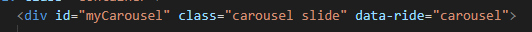
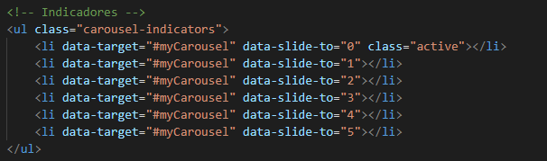
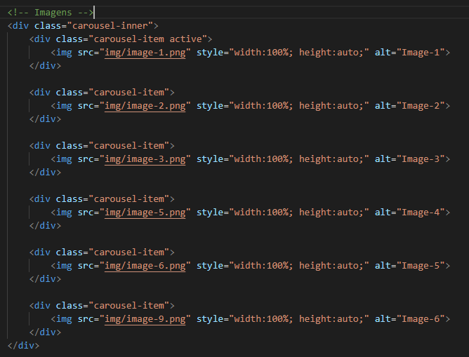
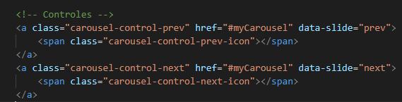

Carousel é uma classe destinada a apresentação de imagens no formato de slides.
Para o funcionamento adequado do carousel teremos classes especificas para sua criação, assim como foi o caso do modal.
inicialmente criamos uma div inicial com a classe .carousel slide, também definir uma id e uma propriedade chamada data-ride com valor "carousel".
Dentro desta div iremos criar três tipos de blocos, um bloco de indicadores, um bloco para as imagens e um bloco para os controles.
No bloco de indicadores nós trataremos uma lista ul de classe .carousel-indicators, dentro desta lista cada elemento lo terá duas propriedades data-target e data-slide-to.
Na propriedade data-target iremos indicar o id do nosso carousel, na propriedade data=slide-to iremos informar o numero de imagens pelo seus indices.
Também é importante que o primeiro item tenha uma classe especial classe .active, essa classe determina que este será o primeiro item a ser exibido.
Neste bloco nos devemos criar uma div principal com a classe .carousel-inner e dentro desta div para cada nova imagem iremos estabelecer um outra div com a classe .carousel-item, dentro desse elemento iremos vincular o elemento de imagem referente a aquele item do carousel.
Para cada imagem deverá ser feito dessa forma, no entanto, uma dessas imagens deverá também conter em sua classe o modificador active para determinar que essa será a primeira imagem a ser exibida.
No bloco de controle teremos dois elementos que são os controles de avançar e retornar as imagens, cada controle terá um elemento link que receberá a classe .carousel-control-prev ou carousel-control-next, assim como sua propriedade href deverá ser dirigida ao id que estabelecemos para o nosso carousel, mas, também devemos especificar na propriedade data-slide o comportamento prev ou next, de acordo com o tipo de controle a ser criado.
Dentro de cada elemento a, iremos especificar um elemento span que representará o ícone do controle, para isso definimos a class .carousel-control-next-icon ou carousel-control-prev-icon
